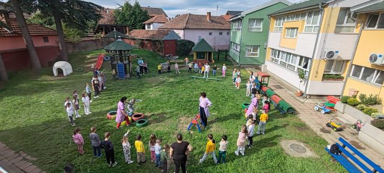
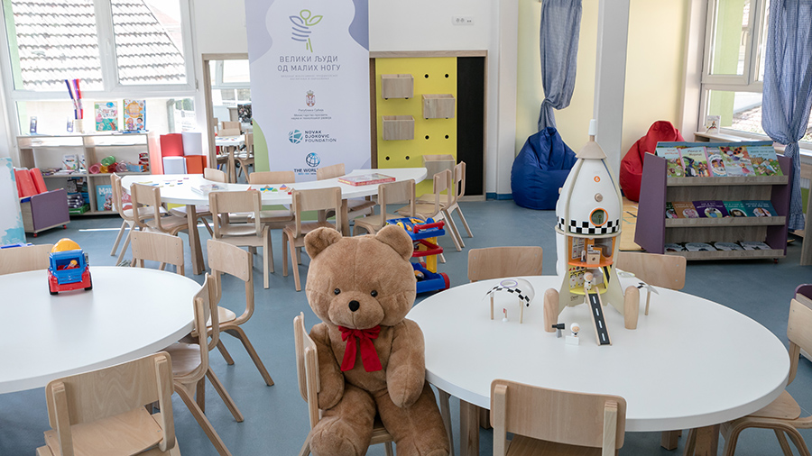
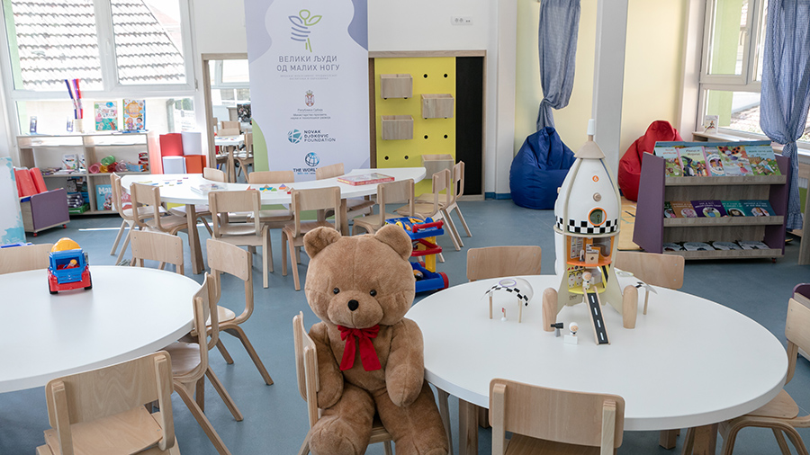
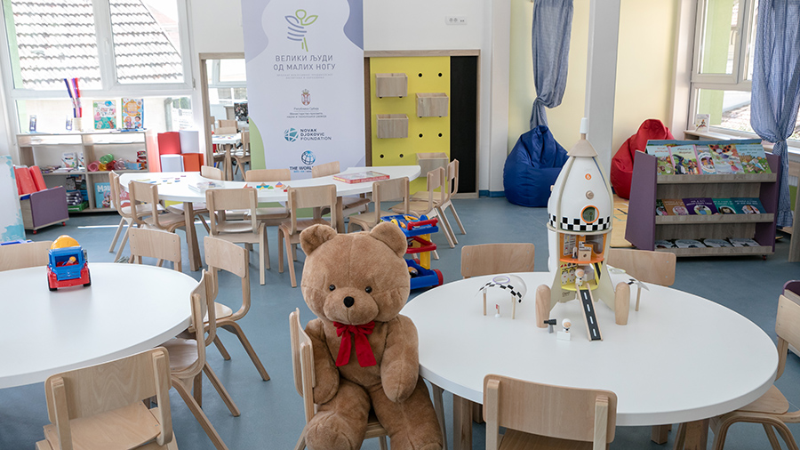

Вртић "Дечја Радост"
Детаљне информације о објекту
Објекат "Дечја Радост"

 


Адреса
12.бригаде бр. 34, 16210 Власотинце
Телефон
016/875-425
Руководилац
Сузана Цветковић
Радно време
5.30 - 16.30
Васпитно-образовне групе
| Васпитна група | Млађа јаслена група целодневни |
Старија јаслена група целодневни |
Млађа васпитна група целодневни |
Средња васпитна група целодневни |
Старија васпитна група целодневни |
Мешовита група целодневни |
ППП 1 целодневни |
ППП 2 целодневни |
ППП- полудневни поподневна |
|---|---|---|---|---|---|---|---|---|---|
| Број уписане деце | 14 | 21 | 25 | 29 | 29 | 22 | 29 | 28 | 19 |
Вртић „Дечја радост“ има:
Седам радних соба, издвојени дечији тоалети, посебан простор за прање руку и девет група, сала је прилагођена за потребе ПП- програма једне групе, централну кухињу са магацином; канцеларију за директора; канцеларију за психолошко- педагошку службу; канцеларију за књиговодство, просторију за вешерај, перионицу, просторију за тријажу и изолацију деце, медијатеку, кројачку радионицу, чајну кухињу, радионицу за мајсторе, просторију за чување документације- архива, просторију за чување хемијских средстава, котларницу, просторију за чување опреме за чишћење и одржавање, 2 тоалета за кухињско особље, 3 тоалета за одрасле, двориште.
Структура запослених
Организациону структуру чине следеће службе:
- Служба руковођења
- Служба педагошког рада
- Служба васпитно образовног рада, нега деце, сервирање оброка и одржавање хигијене
- Служба општих правних и кадровских послова
- Служба економско-финансијских, рачуноводствених послова и послова набавке
- Служба исхране
- Васпитач-руководилац радне јединице
- Васпитач
- Медицинска сестра-васпитач
- Медицинска сестра за превентивну и здравствену заштиту
- Сервирка
- Спремачица
- Техничар за одржавање одеће- вешерка